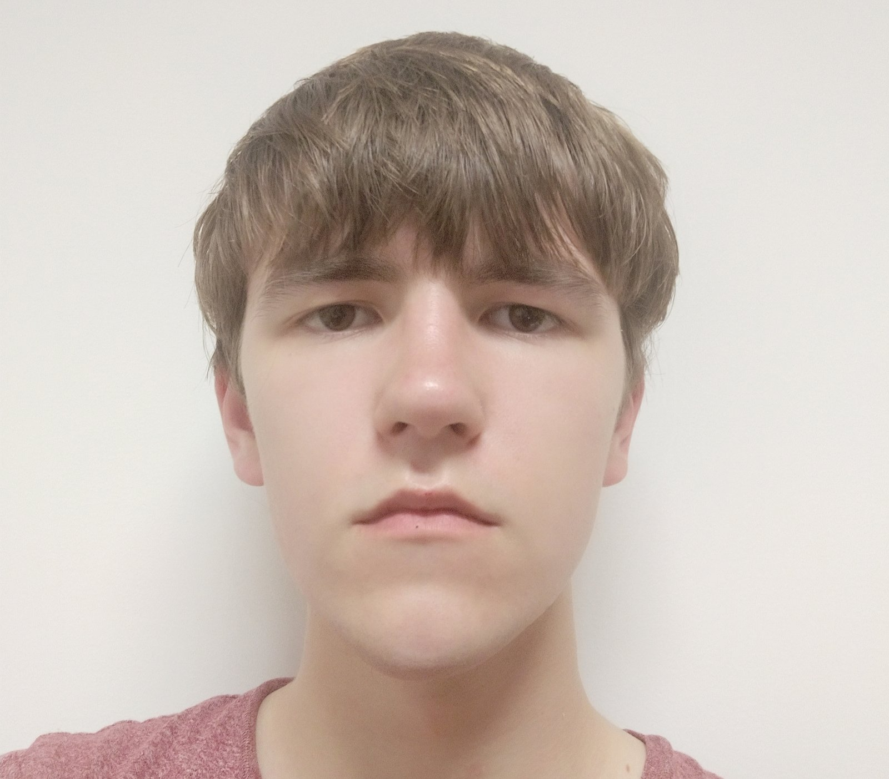

My name is Thomas and im the leader of the Group "Game Tutorial Allience". I have some experience in making a website using
html and css because i already did a semester in media design in Fontys University of Applied Sciences. My responsibility inside the
group is to work on the tasks and make sure all tasks are finishes on time. Inside the website I helped everyone
with difficulties they had with the css. I also made the design/template for the pages where you choose a tutorial and for
the actual tutorials itself. I also made the tutorials for Overwatch 2 and Hollow Knight.


My name is Praise, and I am proud to be a valued member of the Game Tutorial Alliance.
As a passionate contributor to our team, I had the privilege of playing a key role in
various aspects of our projects.I was involved in creating the FIFA 23 tutorial page,
the About page, and adding the feedback we received from teachers and students. I was
also involved in working on team tasks such as prototypes, personas, conducting interviews,
creating our MoSCoW, and sending out surveys. All of this was possible due to the knowledge
I gained throughout my time at Fontys.

My name is Danya and I am a member of Game Tutorial Alliance. I have some experience in Html and CSS through my studies in Fontys
University of Applied Sciences where I have been working on the websites for Pizzeria's. My responsibility inside of the group is to, as everyone,
work together with my teammates on the tasks. I am also responsible for keeping track of things we are doing and need to do.
I also take responsibilty to organise the group when leader is not present. Inside of the website itself my contribution was to create the sidebar
navigation and to create the genre pages. And, of course, I am responsible to make a tutorial for the game I choose, which is CSGO.

My name is Ivan Setiawan and I am a member of the group Game Tutorial Alliance. I have a bit of experience in html & css, and currently still learning and improving on my front end developing skill at Fontys University Of Applied Sciences. Through out this journey I help my group in designing and sharing the ideas for the layout of this webiste, I made the all the elements in the index page, sitemap page, and the Grand Theft Auto tutorials page. As a group mate I am responsible in communicating, sharing ideas, working together at Fontys University Of Applied Sciences.